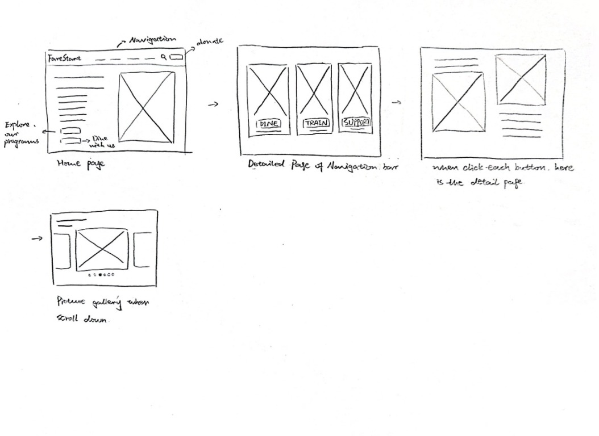

‹ Back to Work
‹ Back to Work
From Sketch to Layout
I started with hand-drawn wireframes to think through the navigation, main calls to action, and the order of content on the homepage. I then used Figma Make to develop the digital layout. My AI prompts focused on following the sketch, keeping navigation simple, adjusting the hero image, and simplifying decorative elements so I could refine the visual style myself.
The sketches also explored how visitors might move between the main homepage and more detailed content. The final deliverable is a scrollable homepage concept, rather than a functional multi-page prototype.
